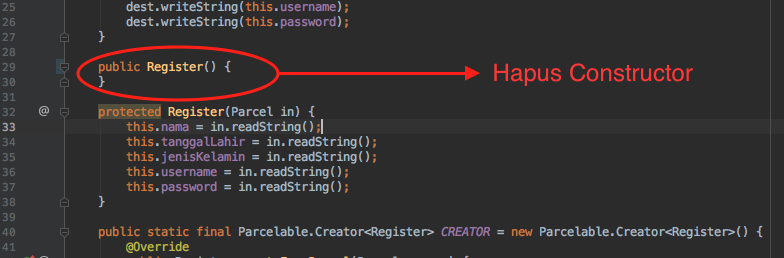
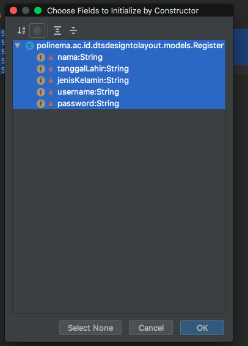
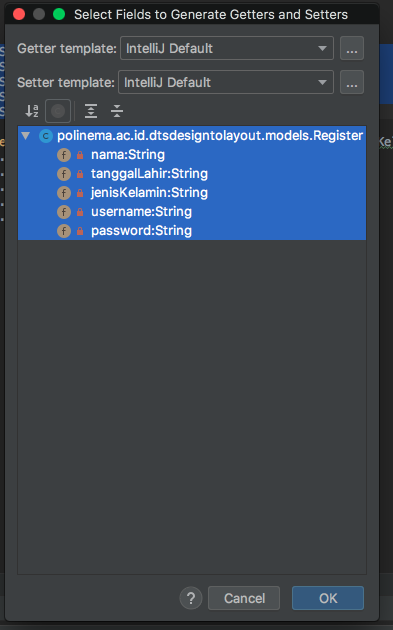

Tujuan
Intent dapat dimanfaatkan untuk mengirimkan informasi antar activity. Namun bagaimana jika data yang kita kirimkan sangat banyak ? Apakah intent menjadi solusi yang efektif ? Kemungkinan jawabannya adalah tidak. Untuk itu, Android menyediakan kelas Parcelable untuk mengatasi permasalahan ini. Kita dapat mengirimkan banyak informasi atau data dengan menggunakan Parcelable dalam satu kali pengiriman. Hal ini dikarenakan, Parcelable merupakan sebuah object yang dapat berisi banyak data.
Plugin Tambahan
Untuk mempermudah pembuatan object parcelable kita akan menambahkan plugin kedalam Android Studio.
- Buka File->Settings->Plugins (OS Windows)
- Cari plugin dengan nama Android Parcelable code generator
- Install plugin
- Restart Android Studio
Berikut ilustrasi instalasi plugin pada Android Studio. Ilustrasi mungkin berbeda pada versi dan OS yang digunakan

Membuat Model Parcelable
Parcelable merupakan sebuah object yang memiliki property didalamnya. Property dalam sebuah object dapat kita set nilainya dan dapat kita ambil atau get nilai yang sudah di definisikan. Object yang digunakan sebagai Parcelable lebih merujuk pada konsep sebuah model. Model merupakan kerangka object yang property-propertynya dapat dimanfaatkan secara berulang.
Pada percobaan kali ini, kita akan mencoba untuk membuat model Parcelable dari form Register yang sudah dilakukan sebelumnya. Selanjutnya kita akan mencoba memanfaatkan Parcelable untuk mengirim data dengan menggunakan intent.
Untuk membuat sebuah model Parcelable langkah-langkah yang harus dilakukan adalah,
Pertama, buatlah
packagebaru bernama model didalam packagepolinema.ac.id.dtsdesigntolayout. Klik kanan packagepolinema.ac.id.dtsdesigntolayout-> New -> Package
Berikan nama
modelspada package. Klik OKKlik kanan pada package models -> New -> Java Class

Berikan nama Register. Klik OK

Buka model
Register.java, buatlah 5 variabelstringseperti kode dibawah ini```java package polinema.ac.id.dtsdesigntolayout.models;
public class Register {
private String nama;
private String tanggalLahir;
private String jenisKelamin;
private String username;
private String password;
}
```
Tekan kombinasi
alt + ins(Windows) ataucommand + n(Mac) pada keyboard. Akan muncul jendela generator kode.Pilih
Parcelable. Klik OK
Hapuslah kode konstruktor seperti yang ditunjukkan oleh gambar berikut,

Ulangi langkah ke-6, kemudian pilih
Constructoruntuk membuat konstruktor. Pilih semua variabel yang ada (Ctrl + A), lalu klik OK
Ulangi langkah ke-6, kemudian pilih
Getter and Setter, untuk memuat kodegetterdansetter. Pilih semua variabel yang ada (Ctrl + A), lalu klik OK
Sampai tahapan ini kita sudah membuat model Parcelable untuk form register.
Implementasi Parcelable
Setelah model selesai kita buat, selanjutnya kita akan mengimplementasi model Parcelable pada activity Register
Buka kode activity
RegisterActivity.javaModifikasi kode menjadi seperti berikut,
public class RegisterActivity extends AppCompatActivity { private final String TAG = RegisterActivity.class.getName(); public static final String Key_RegisterActivity = "Key_RegisterActivity"; EditText editTextNama, editTextTanggalLahir, editTextUserName, editTextPassword; //RadioButton radioButtonLaki, radioButtonPerempuan; RadioButton radioButtonJK; RadioGroup rgJenisKelamin; @Override protected void onCreate(Bundle savedInstanceState) { super.onCreate(savedInstanceState); setContentView(R.layout.activity_register); editTextNama = findViewById(R.id.edt_txt_nama); editTextTanggalLahir = findViewById(R.id.edt_tanggal_lahir); editTextUserName = findViewById(R.id.edt_username); editTextPassword = findViewById(R.id.edt_password); // radioButtonLaki = findViewById(R.id.rb_laki); // radioButtonPerempuan = findViewById(R.id.rb_perempuan); rgJenisKelamin = findViewById(R.id.rg_jenis_kelamin); } public void postSignUp(View view) { String password = editTextPassword.getText().toString(); String username = editTextUserName.getText().toString(); String nama = editTextNama.getText().toString(); // String jk = radioButtonPerempuan.isChecked() ? "Perempuan" : "Laki-laki"; // Ambil id radio button yang dipilih int selectedJk = rgJenisKelamin.getCheckedRadioButtonId(); // Jadikan id radio button sebagai rujukan binding view radioButtonJK = findViewById(selectedJk); // Hasilnya sama persis dengan baris 40, namun dengan pendekatan yang berbeda String jk = radioButtonJK.getText().toString(); String tanggal_lahir = editTextTanggalLahir.getText().toString(); Register register = new Register(nama, tanggal_lahir, jk, username, password); Intent intent = new Intent(RegisterActivity.this, RegisterResultActivity.class); intent.putExtra(Key_RegisterActivity, register); startActivity(intent); } }Keterangan kode :
Baris kode
Register register = new Register(nama, tanggal_lahir, jk, username, password);digunakan inisiasi model parcelablenama, tanggal_lahir, jk, username, dan password merupakan property dari model parcelable yang harus diisikan pada saat model dibuat (inisiasi kelas dengan constructor)
Pada kode
intent.putExtra(Key_RegisterActivity, register);hanya akan mem-passing object parcelable.Selanjutnya buka kode activity
RegisterResultActivity.javaModifikasi kode activity tersebut menjadi seperti berikut,
package polinema.ac.id.dtsdesigntolayout; import android.os.Bundle; import android.support.v7.app.AppCompatActivity; import android.widget.TextView; import polinema.ac.id.dtsdesigntolayout.models.Register; public class RegisterResultActivity extends AppCompatActivity { //inisialisasi variabel TextView tvResultNama, tvResultTanggalLahir, tvResultJenisKelamin, tvResultUsername; // Intent key public static final String Key_RegisterActivity = "Key_RegisterActivity"; @Override protected void onCreate(Bundle savedInstanceState) { super.onCreate(savedInstanceState); setContentView(R.layout.activity_register_result); // assign view tvResultNama = findViewById(R.id.tvResultNama); tvResultTanggalLahir = findViewById(R.id.tvResultTanggalLahir); tvResultJenisKelamin = findViewById(R.id.tvResultJenisKelamin); tvResultUsername = findViewById(R.id.tvResultUsername); //get string array berdasarkan key //String[] stringArray = getIntent().getStringArrayExtra(RegisterActivity.Key_RegisterActivity); Register register = getIntent().getParcelableExtra(Key_RegisterActivity); //set value to textview // tvResultNama.setText(stringArray[0]); // tvResultTanggalLahir.setText(stringArray[1]); // tvResultJenisKelamin.setText(stringArray[2]); // tvResultUsername.setText(stringArray[3]); // Set value to TextView based on Parcel Object tvResultNama.setText(register.getNama()); tvResultTanggalLahir.setText(register.getTanggalLahir()); tvResultJenisKelamin.setText(register.getJenisKelamin()); tvResultUsername.setText(register.getUsername()); } }
Keterangan kode :
Pada baris kode
Register register = getIntent().getParcelableExtra(Key_RegisterActivity);kita membuat object register (model register). Object ini memiliki value dari parcelable yang dikirim oleh activityRegisterActivity.Kemudian kita melakukan penggatian text dari TextView dengan menggunakan property dari object register. Perhatikan potongan kode dibawah ini.
tvResultNama.setText(register.getNama());
tvResultTanggalLahir.setText(register.getTanggalLahir());
tvResultJenisKelamin.setText(register.getJenisKelamin());
tvResultUsername.setText(register.getUsername());
registermerupakan variable yang kita inisiasi dengan tipe modelRegister. Sehingga variabel ini juga memiliki nama, tanggal lahir, jenis kelamin, username, dan password (Perhatikan kembali model yang dibuat)Untuk mendapatkan value dari property tersebut, kita dapat menggunakan method
getsesuaigetteryang sudah kita generate.
- Build kembali aplikasi Anda. Maka hasil pada activity RegisterResultActivity tidak jauh berbeda dengan hasil intent dengan data. Namun kali ini kita melakukannya dengan menggunakan metode parcelable yang sangat dianjurkan jika mengirim data dalam jumlah yang banyak dalam satu kali kirim.